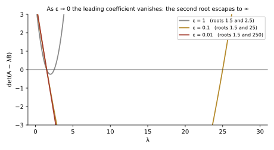
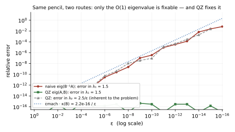

Solving \(Ax = \lambda Bx\) without ever inverting \(B\). You know the Schur form \(A = QTQ^*\) and the QR algorithm behind it. The eigenvalue problem that actually shows up in vibration, control, and DAEs has two matrices, and the tempting shortcut — form \(B^{-1}A\) — silently destroys accuracy exactly when \(B\) is nearly singular. The QZ decomposition (Moler & Stewart, 1973) fixes this: reduce \(A\) and \(B\) to triangular form simultaneously with two unitary matrices, and read eigenvalues as diagonal ratios \(\alpha_i/\beta_i\) — with eigenvalues at infinity handled as first-class citizens. Baseline assumed: eigenvalues/eigenvectors, the Schur form, and the idea of the QR algorithm. This page teaches matrix pencils and the floating-point concepts from scratch.
Three nodes in a row, connected by unit springs, the outer ones anchored to ground. The first two carry mass \(m_1 = m_2 = 1\). The third is massless — a common situation in reduced models, where a node stands only for a constraint or a quasi-static degree of freedom.
Free vibration \(M\ddot{x} + Kx = 0\) with \(x(t) = v\,e^{i\omega t}\) gives the generalized eigenvalue problem
The eigenvalue now sits between two matrices. Collect them into the matrix pencil \(K - \omega^2 M\) — literally the matrix \(K\) minus \(\omega^2\) times \(M\) — and take its determinant:
No — it moved to infinity. The determinant's degree drops from 3 to 2 precisely because \(\det M = 0\): the coefficient of \(\lambda^3\) is \(\det(-M)\), which vanished. The two finite roots are \(\omega^2 = \tfrac{7 \pm \sqrt{17}}{4} \approx \{0.719,\ 2.781\}\), i.e. \(\omega \approx 0.85,\ 1.67\). The "third mode" is the massless node responding instantaneously — infinite frequency, zero inertia. Nothing is broken; the third eigenvalue lives at \(\omega^2 = \infty\). We will see QZ report it natively as a ratio \(\alpha/\beta\) with \(\beta = 0\).
This example motivates the standard vocabulary. A pencil \(A - \lambda B\) is regular when \(\det(A - \lambda B)\) is not identically zero — then it has exactly \(n\) eigenvalues in \(\mathbb{C}\) plus infinity, counted with multiplicity. If the determinant vanishes for every \(\lambda\), the pencil is singular, and the spectrum is not a finite set at all — in Cleve Moler's words, "in some sense, the spectrum is the entire complex plane." Singular pencils are their own diagnostic topic; QZ is the standard tool for detecting them (Section 5).
One notational upgrade pays for itself immediately. Because \(\beta = 0\) must be representable, software (LAPACK included) stores each eigenvalue as a homogeneous pair \((\alpha, \beta)\), with \(\lambda = \alpha/\beta\) formed only at the end — the LAPACK \(\texttt{dhgeqz}\) docs even warn that the ratio "should not, in general, be computed" routinely, to avoid overflow. On this number line, \(\beta = 0\) is not an error; it is the address of \(\infty\):
The obvious move: multiply through by \(B^{-1}\) and fall back to the ordinary eigenproblem you already trust.
With our massless node this is dead on arrival: \(M^{-1}\) does not exist. But "almost dead" is worse than dead, so let's give the naive route its best chance. Shrink the chain to two degrees of freedom and let the second mass be tiny but nonzero, \(m_2 = \varepsilon\):
Both matrices are symmetric positive definite, so this is a legitimate vibration model in generalized coordinates — one direction of the system carries almost no mass. Because the pair is congruent to a diagonal pair (\(U^{\mathsf T}AU\) and \(U^{\mathsf T}BU\)), the exact eigenvalues are visibly the ratios of the diagonals:

Same story as the massless node, one dimension smaller — and here the naive route can run, for every \(\varepsilon > 0\). It computes \(B^{-1}A\) and calls a standard eigensolver. What could go wrong?
Backward error and conditioning. Two numbers decide whether you can trust a computed answer. The condition number \(\kappa\) measures how much the exact answer moves when the input moves — a property of your problem, not your code. The backward error measures how far your algorithm had to bend the input to produce exactly the output it gave — a property of the algorithm. The governing principle of numerical analysis joins them (Higham & Higham, 1998):
Algorithms built from unitary (orthogonal) transformations are the gold standard because their backward error is a few \(\varepsilon_{\text{mach}}\): rotations don't amplify norms (\(\|QX\| = \|X\|\)), so they can't manufacture error. You already know this is why Schur form beats a Jordan form. For a simple pencil eigenvalue \(\lambda\) with right/left eigenvectors \(x, y\), the condition number makes both regimes concrete:
I verified this bound numerically for the 2-DOF family at \(\varepsilon = 10^{-8}\) with 200 random perturbations of size \(10^{-12}\): for \(\lambda_1 = 1.5\), \(\kappa = 1\) exactly (observed worst error \(3.8\times10^{-12}\), bound \(4.4\times10^{-12}\)); for \(\lambda_2 = 2.5\times10^{8}\), \(\kappa = 10^{8}\) (observed \(2.4\times10^{4}\), bound \(2.5\times10^{4}\)). Two regimes, one formula.
The inversion — and more broadly, the whole idea of moving \(B\) to the wrong side. Computing \(B^{-1}\) in floats implicitly replaces \(B\) by a matrix that differs from it by about \(\varepsilon_{\text{mach}}\kappa(B)\, \|B\|\), because the elimination inside the inversion must resolve the tiny \(10^{-16}\)-scale eigen-direction against an \(O(1)\) one. The eigensolver then solves a different problem to full accuracy. The multiplication by \(A\) and the eigensolver are near-blameless; the route itself injected a perturbation of size \(\varepsilon_{\text{mach}}/\varepsilon\) into \(B\) — and no eigensolver can recover information the input no longer contains.
The demo below runs that experiment live: the same 2-DOF pencil, solved two ways, as \(\varepsilon\) shrinks from \(10^{-1}\) down to \(0\). Drag the slider and watch the naive route's error in \(\lambda_1\) track the \(\varepsilon_{\text{mach}}\kappa(B)\) guide line, while QZ stays at machine precision — until the last stop, where \(B\) is exactly singular, the naive path divides by rounding noise, and QZ calmly reports the infinite eigenvalue as \((\alpha_2, \beta_2) = (2.5,\ 0)\).
| quantity | naive: eig(B⁻¹A) | QZ: eig(A,B) |
|---|---|---|
| λ₁ (true: 1.5, κ = 1) | — | — |
| rel. error in λ₁ | — | — |
| λ₂ (true: 2.5/ε) | — | — |
| QZ pair (α₂, β₂) | — | — |
| implicit perturbation of B | — | ~ εmach = 2.2e-16 |
Naive values are computed live in your browser, op for op as a hand-written 2×2 solve would (invert, multiply, quadratic formula — cross-checked bit-for-bit against the build-time Python in scripts/verify_demos.py). QZ values were computed by LAPACK's zgges at build time (scripts/qz_table.json).

Here is the core idea. The Schur decomposition works because unitary similarity \(A = QTQ^*\) is backward-stable and because triangular form is as close to diagonal as every matrix can be forced (defective ones included). Keep both properties and add a second matrix:
This is the generalized Schur decomposition — the QZ decomposition. The name comes from the letters: \(Q\) on the left, \(Z\) on the right (Moler and Stewart avoided re-using \(Q\) for two different matrices). Why is it the right target? Because with both matrices triangular, the determinant factorizes:
so the eigenvalues of the pencil are the diagonal ratios \(\lambda_i = t_{ii}/s_{ii}\) — no eigenvector computation, no division by \(B\), just \(n\) honest quotients, with \(s_{ii} = 0,\ t_{ii} \neq 0\) meaning \(\lambda_i = \infty\). Every square pair \((A, B)\) admits such a form (a short induction: find one deflating line, deflate, repeat); whether the pencil is regular only decides if the ratios are meaningful.
Run it on the massless-node chain — LAPACK's complex QZ (zgges) returns, to 6 digits:
The bottom-right slot of \(S\) is exactly zero while \(T\)'s is \(2.236068\):
The infinite eigenvalue was never an edge case here: it fell out of the triangular form the same way the finite ones did — "isolated zeros in \(\alpha\) or \(\beta\) yield zero or infinite eigenvalues with no special difficulties" (Moler). Notice also what didn't happen: no matrix was inverted, and both factors stayed unitary.
The columns of \(Q\) and \(Z\) are not decoration — they are the answer to the subspace version of the problem. For a standard Schur form, the leading \(k\) columns of \(Z = Q\) span an invariant subspace: \(A Z_k = Q_k\, T_k\), the image lands back inside a \(k\)-dimensional space you already know. With two matrices, the leading columns must satisfy both inclusions at once:
This is not just structure for its own sake — it is what control and model-reduction code actually extracts from QZ, and it is checkable. For the running example, the first columns of the computed factors satisfy \(\|K z_1 - t_{11}\, q_1\| = 0.0\) and \(\|M z_1 - s_{11}\, q_1\| = 1.1\times10^{-16}\) — machine-exact, as the unitary construction promises.
QZ is the QR algorithm wearing a second matrix. It runs in two phases, both built exclusively from unitary rotations (Givens rotations and Householder reflectors — see also the Householder transformations and Francis QR step pages).
Kp = 2 0 -1
0 2 -1
-1 -1 2
Mp = 0 0 0
0 1 0
0 0 1H = 2 -1 0
-1 2 1
0 1 2
R = 0 0 0
0 1 0
0 0 1T = 2.236 1.135 1.453
0 0.673 -0.288
0 0 2.658
S = 0 0.352 0.275
0 0.936 -0.104
0 0 0.956α = 2.236 0.673 2.658 β = 0 0.936 0.956 λ = ∞ 0.719 2.781
First make \(B\) upper triangular the ordinary way — a QR factorization by Givens rotations, applied to \(A\) as well. Then reduce \(A\) to Hessenberg form. The obstacle: a left rotation that zeroes an entry of \(A\) acts on two rows and punches a subdiagonal hole in triangular \(B\). The fix is a paired rotation from the right, on two adjacent columns, that re-triangularizes \(B\) — and perturbs \(A\) only within its Hessenberg allowance (the first subdiagonal). Sweep down column by column: each entry of \(A\) below the subdiagonal costs one left–right pair, and the whole phase costs \(O(n^3)\). After it, the pencil has the shape \((H, R)\) with \(H\) Hessenberg and \(R\) triangular — the generalized eigenvalue analog of Hessenberg form, which is exactly where the QR algorithm wants its matrix before chasing.
Now run the QR algorithm's engine on \(H\) — implicit Francis double-shift bulge chasing — with one twist: every plane rotation, left and right, is applied to \(R\) too (and accumulated into \(Q\) and \(Z\)). The shifts themselves must respect the pencil: LAPACK's dhgeqz takes them "based on the generalized eigenvalues of the bottom-right 2×2 block of A and B", and describes itself as computing the eigenvalues of a Hessenberg–triangular pair "using the double-shift QZ method". The bulge chases down the subdiagonal of \(H\); when a subdiagonal entry of \(H\) or a diagonal entry of \(R\) underflows relative to its neighbors, a \((\alpha, \beta)\) pair deflates and the problem splits. Termination theory, shift polishing, and \(O(n^3)\) cost all carry over from the standard QR algorithm you know.
Two practical conventions from LAPACK, both verified in the outputs above. First, eigenvalues are reported as \((\alpha, \beta)\) pairs "to avoid overflow — since either lambda or mu may overflow, they should not, in general, be computed": \(\lambda_2 = 2.5/\varepsilon\) genuinely overflows a double as \(\varepsilon \to 0\), but its pair \((2.5,\ 0)\) never does. Second, in the real QZ form, complex-conjugate eigenvalue pairs appear as 2×2 blocks along the diagonal (1×1 blocks are real eigenvalues), so everything stays in real arithmetic. Software can also reorder the diagonal pairs — ordqz in SciPy/MATLAB — clustering chosen eigenvalues into the leading block so that the corresponding deflating subspace can be read off as the leading columns of \(Q\) and \(Z\). That reorder-and-extract move is the workhorse behind Riccati-equation solvers, \(H_\infty\) synthesis, and model reduction.
No — you have discovered a singular pencil. A \(0/0\) slot means \(\det(A - \lambda B) \equiv 0\): the problem has no well-defined spectrum at all. Moler again: "singular pencils occur if and only if zeros in \(\alpha\) and \(\beta\) occur with the same index and (with exact arithmetic) lead to \(\lambda = 0/0\) = NaN." This is genuinely useful output — singular pencils arise from redundant coordinates and modeling errors, and QZ is the standard detector. (With inexact arithmetic the slot comes out as tiny/tiny, so treat suspicious \(\alpha \approx \beta \approx 0\) pairs as a diagnosis, not a numeric answer.)
import numpy as np
import scipy.linalg as sla
K = np.array([[2., -1., 0.], [-1., 2., -1.], [0., -1., 2.]]) # stiffness
M = np.array([[1., 0., 0.], [0., 1., 0.], [0., 0., 0.]]) # mass, node 3 massless
T, S, sdim, alpha, beta, Q, Z, work, info = sla.lapack.zgges(
lambda a, b: True, K.astype(complex), M.astype(complex))
with np.errstate(divide='ignore', invalid='ignore'):
print("alpha/beta =", alpha / beta)
z1, q1 = Z[:, 0], Q[:, 0]
print("||K z1 - T11 q1|| =", np.linalg.norm(K @ z1 - T[0, 0] * q1))
print("||M z1 - S11 q1|| =", np.linalg.norm(M @ z1 - S[0, 0] * q1))
$ python scripts/short_demo.py
alpha/beta = [2.78077641+0.j 0.71922359+0.j inf+nanj]
||K z1 - T11 q1|| = 0.0
||M z1 - S11 q1|| = 1.1102230246251565e-16The inf+nanj display is a NumPy complex-division artifact of \(\beta = 0\); the pair itself, \((2.236068,\ 0)\), is clean. Full experiment suite: scripts/verify_demos.py and scripts/gen_figures.py.
Software. LAPACK: *GGES (Schur forms + optional eigenvalue ordering) and *GGEV (eigenvalues/eigenvectors), built on *GGHRD (phase 1) + *HGEQZ (phase 2). SciPy: scipy.linalg.eig(A, B), scipy.linalg.qz, ordqz. MATLAB: eig(A,B), qz, ordqz. One modern gotcha: NumPy 2.5's np.linalg.eig no longer accepts two matrices — the generalized problem lives in SciPy (which routes to the QZ machinery above).
Once you see pencils, they are everywhere:
For diagonalizable pencils there is even an analog of the eigendecomposition you might have tried first — the Weierstrass form, a congruence taking the pencil to a diagonal–diagonal pair, with Jordan chains for the defective case and the Kronecker form classifying singular pencils. But those canonical forms share the defect of the Jordan form: computationally, they are catastrophically ill-conditioned. The generalized Schur form is the one canonical form in this family that unitary transforms can actually deliver, which is why every serious library computes it.